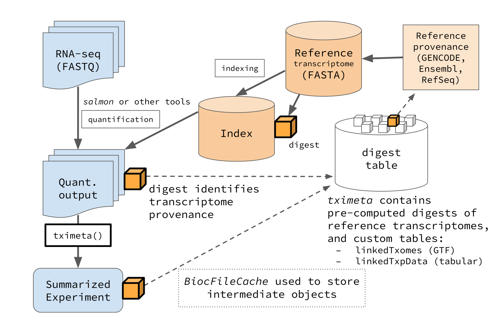

Automatic metadata for RNA-seq
tximeta provides a set of functions for conveniently working with metadata for transcript quantification data in Bioconductor. The tximeta() function imports quantification data from salmon or related quantifiers, and returns a SummarizedExperiment object. tximeta works natively with salmon, alevin, piscem-infer, and oarfish, but can easily be configured to work with any transcript quantification tool.
If tximeta() recognizes the reference transcripts used for quantification, it will automatically download relevant information about the location of the transcripts in the correct genome. These actions happen in the background without requiring any extra effort or information from the user.
This metadata is attached to the SummarizedExperiment in the metadata() and rowRanges() or rowData() slots.
For a list of the reference transcriptomes supported by tximeta(), see the “Pre-computed digests” section of the vignette in the Get started tab. Note that in tximeta documentation, we call the computed identifier for the reference transcriptome a “digest” or sometimes a “checksum”, which is produced by hash function(s) employed by upstream software.
Further steps are also facilitated, e.g. summarizeToGene(), addIds(), or even retrieveCDNA() (the transcripts used for quantification) or retrieveDb() (the correct TxDb or EnsDb to match the quantification data).
For oarfish quantification files: importData() and associated functions can be used in the case that a mix of --annotated and --novel reference transcripts were used in indexing. These functions facilitate the import of data and addition of metadata from multiple sources, including local files and range data. See the mixed reference vignette section for more details.
How it works
The key idea behind tximeta is that Salmon, alevin, and piscem-infer propagate a hash value summarizing the reference transcripts into each quantification directory it outputs. tximeta can be used with other tools as long as the hash of the transcripts is also included in the output directories. See customMetaInfo argument of tximeta() for more details.

Reference
A reference for tximeta package is:
Michael I. Love, Charlotte Soneson, Peter F. Hickey, Lisa K. Johnson, N. Tessa Pierce, Lori Shepherd, Martin Morgan, Rob Patro. “Tximeta: reference sequence checksums for provenance identification in RNA-seq” PLOS Computational Biology (2020) doi: 10.1371/journal.pcbi.1007664
Feedback
We would love to hear your feedback. Please post to Bioconductor support site for software usage help or post an Issue on GitHub, for software development questions.